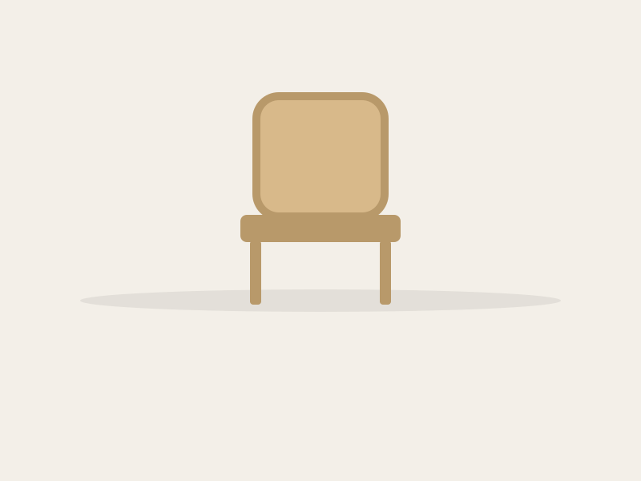
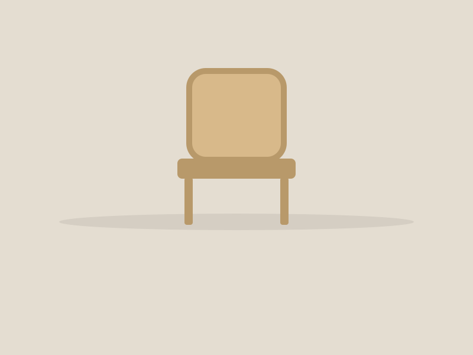

Chair
Eik Rattan Accent Chair
€459.00
Item no. NH-2005
A light accent chair with a hand-woven rattan back. Brings a relaxed, natural look to any room.
Dimensions
- Width: 60 cm
- Depth: 62 cm
- Height: 82 cm
- Seat height: 45 cm
Material & Construction
- Frame: solid ash
- Back: hand-woven natural rattan
- Seat cushion: foam with linen cover
Features & Feel
- Light, airy look
- Natural rattan, every piece is slightly different
- For indoor use only